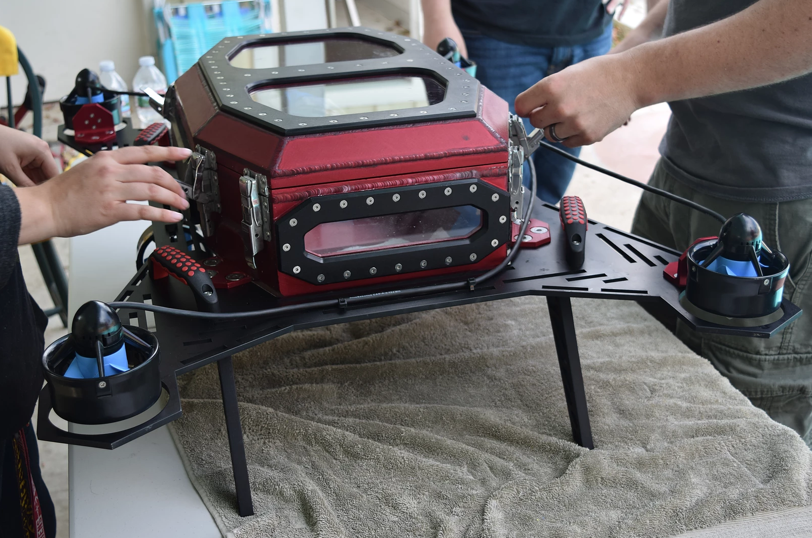

Mechatronics
I have been a team member in Mechatronics for over 2 years. Within the last three months, I was given the opportunity to take a leadership role within the club.
Some of the work I have done includes GUI design, embedded programming, database design, and web development.
